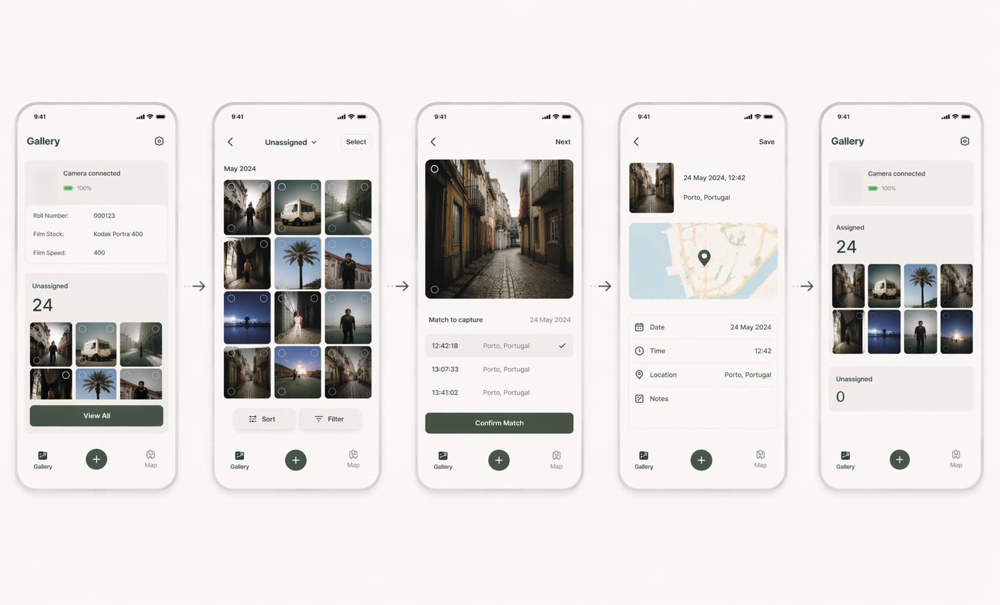

Your film photos remember when they were taken
Monologs connects every analogue frame with its time, place and story.

Attach
Attach Monologs to your film camera.

Capture
Take photos as usual. Each frame is logged automatically.
Sync
Sync the recorded roll. Time, location and sequence transfer.

Add scans
Upload developed scans. Monologs matches images with frames.

Rediscover
Rediscover the story behind every single frame.